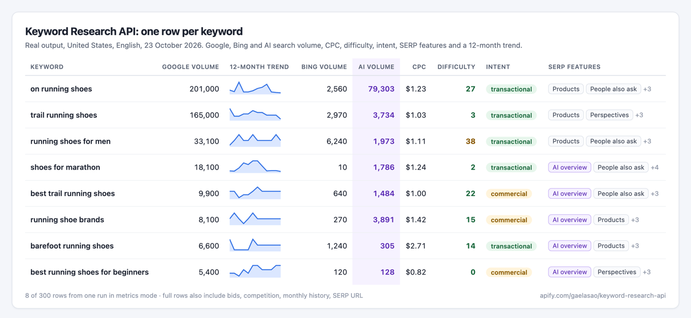

A keyword research API without a Google Ads account
Google Keyword Planner shows vague ranges unless you run ads. This API returns exact monthly search volume, cost per click, difficulty from 0 to 100, search intent, AI search volume and the features on the results page, for up to thousands of keywords per run.
Real output for 10 SEO keywords in the United States, fetched on 28 October 2026:
| Keyword | Monthly searches | CPC | Difficulty | Intent | AI searches |
|---|---|---|---|---|---|
| google trends | 368,000 | $11.92 | 54 | informational | 1,458 |
| keyword planner | 8,100 | $18.46 | 79 | commercial | 709 |
| keyword research tool | 3,600 | $14.52 | 81 | commercial | 1,201 |
| seo keywords | 2,900 | $16.92 | 79 | commercial | 2,242 |
| free keyword research tool | 2,400 | $12.94 | 79 | informational | 486 |
| ahrefs keyword generator | 1,300 | $21.41 | 74 | commercial | 1 |
| long tail keywords | 1,000 | $7.63 | 61 | informational | 535 |
| search volume | 480 | $49.27 | 33 | informational | 473 |
| keyword difficulty checker | 320 | $9.48 | 22 | informational | 0 |
| keyword research api | 50 | — | 10 | commercial | 1 |
“AI searches” estimates how often the topic comes up in AI assistants. Difficulty runs from 0 (easy) to 100 (hard).
Three ways to use it
- Metrics: paste a list of keywords, get volume, CPC, difficulty, intent, 12-month trend and SERP features for each.
- Ideas: give a seed keyword, get related keywords, long-tail suggestions or Google’s related searches, with the same metrics.
- Competitors: give up to 10 domains, get the keywords each one ranks for, with position and estimated traffic.
Compared with Google Keyword Planner
| Keyword Planner | This API | |
|---|---|---|
| Account needed | Google Ads account | Apify account (free plan works) |
| Search volume | Ranges unless you spend on ads | Exact monthly average + 12-month trend |
| Difficulty and intent | No | Yes |
| AI search volume and SERP features | No | Yes |
| Competitor keywords | No | Up to 10 domains per run |
| Bulk and automation | Manual export | API, schedules, n8n, Make, Zapier, MCP |

Price
$2 per 1,000 keywords with data, plus $0.01 per run. Keywords with no data are free. Free Apify accounts can run 20 keywords per run.
Try it with your keywords
Paste up to thousands of keywords, pick a country and run. Export to CSV, Google Sheets or JSON, or call the API.
API example
curl -X POST "https://api.apify.com/v2/acts/gaelasao~keyword-research-api/run-sync-get-dataset-items?token=YOUR_APIFY_TOKEN" \
-H "Content-Type: application/json" \
-d '{"keywords":["keyword research tool","seo keywords"],"location":"US"}'Ready-made searches
- Bulk search volume checker
- Keyword difficulty checker
- Long-tail keyword finder
- Competitor keywords
- Striking-distance keywords
- Search intent checker
- SERP features and AI search volume
- UK keyword research
Questions
Where does the data come from?
From DataForSEO’s Google Ads and Labs data, the same sources many SEO tools resell. The tool adds clean fields and filters.
Which countries are supported?
All countries and languages that Google Ads covers. Bing volume is available on request for supported markets.
Can AI agents use it?
Yes. It is available through the Apify MCP server, so Claude, ChatGPT or Cursor can call it as a tool.